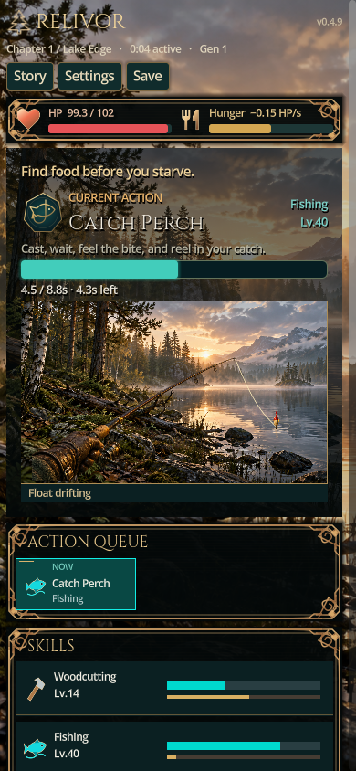
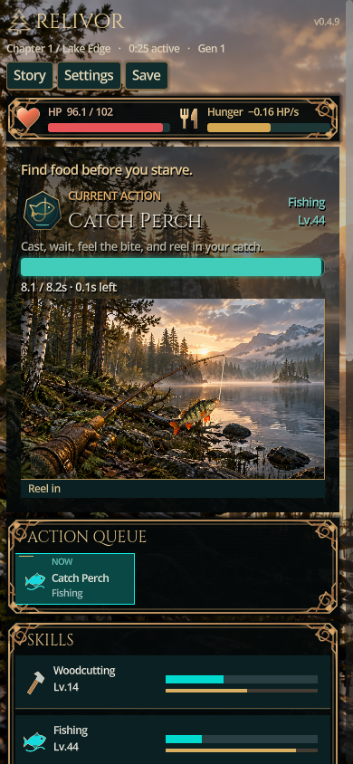
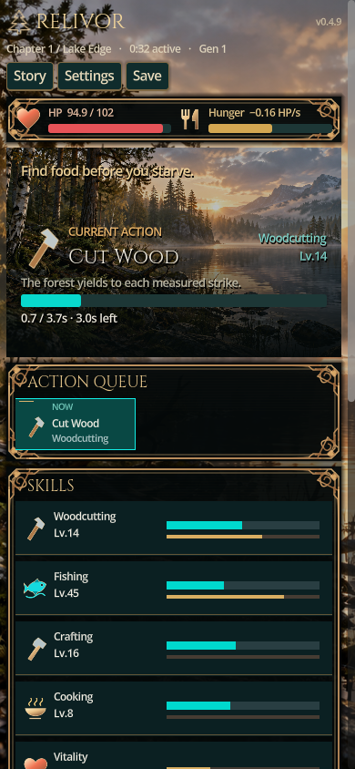

Spil · Download MP4 · Testnotat · Ændrede filer
En hel 30-sekunders cyklus og skift til Cut Wood, optaget fra den rigtige WebGL-build. Spillets fangsttid vises separat på progressbaren.
276 Godot-checks og 9 lokale browser-checks passer. Ingen fysisk iPhone/Safari- eller Android-test.


